67 · t113
67 · t126
67 · t144
67 · t156
67 · t168
67 · t174
67 · t188
70 · t113
70 · t145
70 · t159
70 · t173
70 · t181
70 · t190
70 · t210
65 · t113
65 · t138
65 · t160
65 · t174
65 · t183
65 · t204
Every render on this page is the SKELETAL_3D backend drawing the same deterministic simulation the sprite backend draws, with the approved Touchline_Player_courtois.glb (sha256 cfd70a3a…, 22.1 MB, 29 primitives, 306,504 vertices, 23 joints) skinned onto the runtime skeleton built from Courtois's own tall rig (H 2.014 m, bind height 2.0095 m, world scale 1 — never rescaled from the 199 cm roster height, never rebuilt). Actions come from the CURRENT branch (v13.1 distribution, BALL_AT_FEET, catch library, V6 far dive); Astra's older action snapshot was audited and not used. Companion pages: GK distribution (v13.1) · GK motion library · findings: GK_CHARACTER_COURTOIS_FINDINGS.md · handoff: handoff/.
Sections: gameplay-camera views · Mixed / C native-output · READY / static proof + facings · V6 far dive 42 + mirror 49 · put-down · roll / throw / punt · catches, gathers, foot saves · glove-ball / boot-ball / sole-ground close views · test keeper vs Courtois · architecture + proportion-aware path · contact calibration + residuals · regression · performance / storage · incompatibilities + remaining issues
These are the frames a player sees: the touchline camera, world scale 1, the 3D ball handed to the 2D ball beyond 3 m as before. The put-down (64), the V6 far dive (42) and its mirror (49), an overarm throw (67) and a punt (70). Gameplay gifs play in real time at 30 fps (every second tick; every tick is simulated and drawn), close gifs at 60 fps.
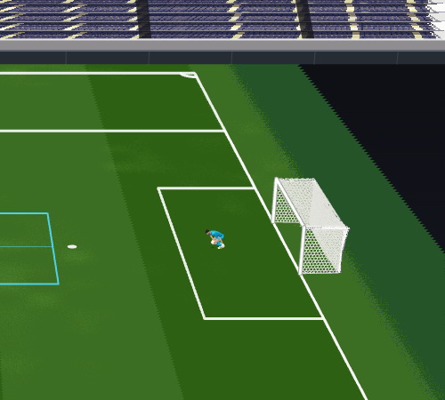
Contract reproduced by sandbox/visual/tools/anim3d/gk3d_capture_mixed.js: the environment is the page's own 2D pass rasterized natively at density 2 (device scale 2, keeper layer hidden), the character (+ the shared-depth presentation ball) is rasterized natively at density 4 inside its render ROI by the runtime's own character program (gk3dRenderLayer(4): 4 fixed sub-pixel samples resolved premultiplied, inward ink, Soft-Cel tone, refined vertex colours ×(.62+.48·lum), eyes ×(.86+.17·lum), glove latex ×(.77+.25·lum), gear rubber ×(.72+.36·lum), the 512² kit atlas sampled LINEAR without mipmaps), and composited at one native character pixel per output pixel: output 2000×1800 for the clip [600,150,500,450], same CAMERA_V1, same world scale, same pitch coverage, no fit-to-box, no generic PBR. Character / ball depth is shared in the character pass (the ball is drawn into the same depth buffer). Below: the exact gameplay-size output (the 2000×1800 file shown at 500 px = game size, browser-scaled) and the enlarged diagnostic crop (the ROI cut from the same 2000×1800 pixels, 1:1).
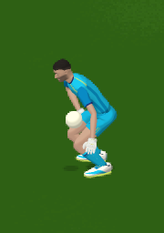
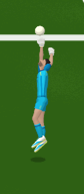
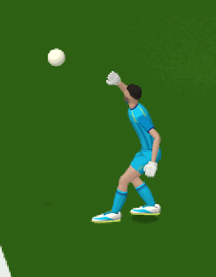
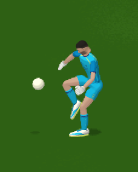
Neutral READY / SET stance (fixture 64 before the shot, fixture 42 SET_CROUCH) and the angled / front-view fixtures (72, 73, 75 face SW / NW / SW; 76, 77, 78 face the camera) at five ticks each — the corrected hair, the approved face (vertex-coloured, unlit-refined), the I23+S3+L2 construction, the Madrid-blue kit / gloves / boots. Close crop = zoom 3.5 keeper-centred, 2× nearest.
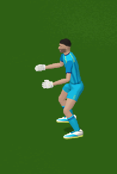
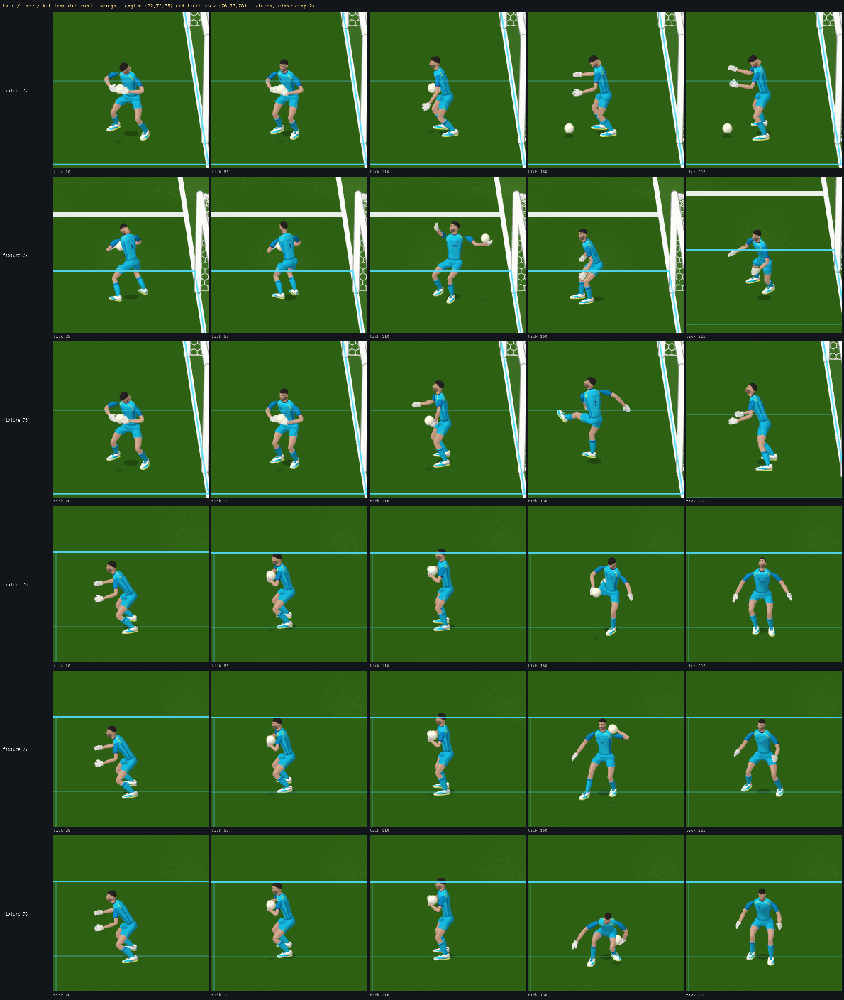
phases (Courtois): GK_FAR_DIVE_R SET_CROUCH [SET] (t0) → READ (t28) → READ (t32) → COMMIT (t38) → SAVE (t65) → SAVE (t130) → SAVE (t162) → SAVE (t194) → SAVE (t259)
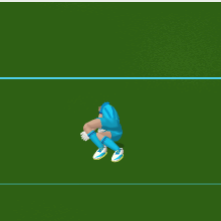
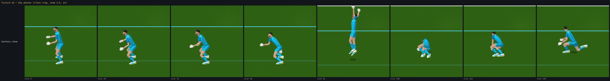
Mixed diagnostic crops through the lifecycle (set/load → takeoff → extension → contact → impact/landing → half-kneel → get-up → READY), 1:1 at density 4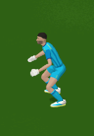
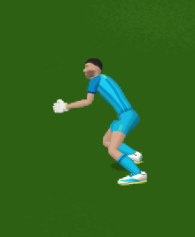
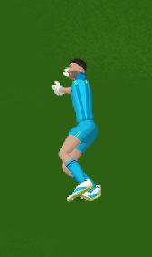
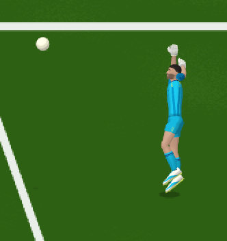
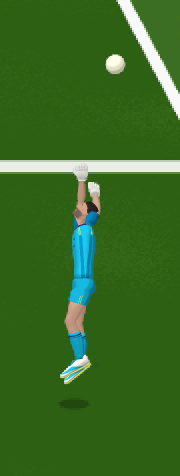
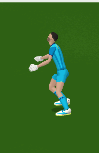
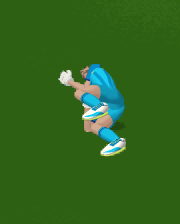
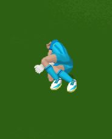
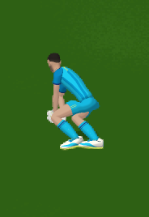
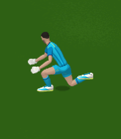
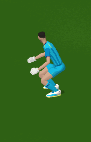
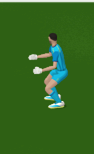
phases: READ (t0) → COMMIT (t15) → SAVE (t16) → SAVE (t65) → SAVE (t97) → SAVE (t130) → SAVE (t194) → SAVE (t227) → SAVE (t259)
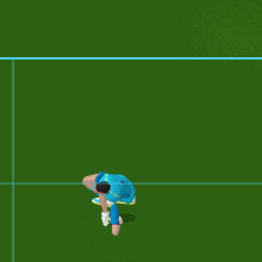
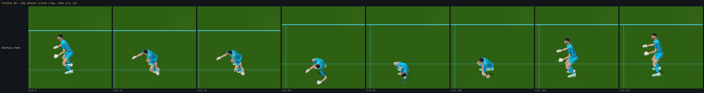
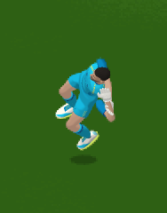
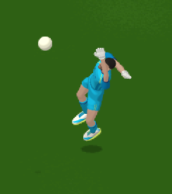
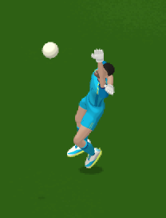
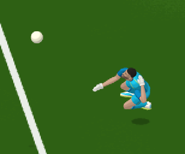
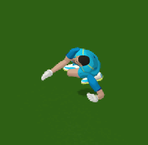
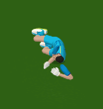
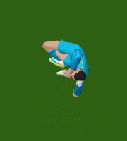
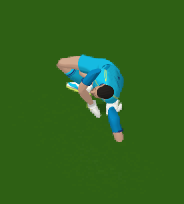
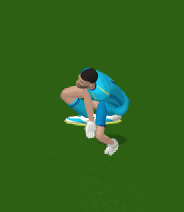
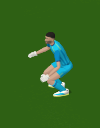
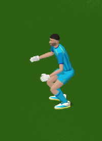
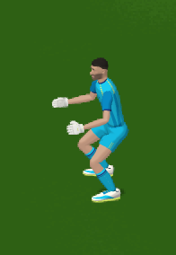
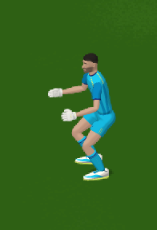
phases: READ (t0) → PREPARE (t18) → COMMIT (t45) → SAVE (t46) → SAVE (t120) → SAVE (t160) → SAVE (t199) → SAVE (t279) → SAVE (t319)
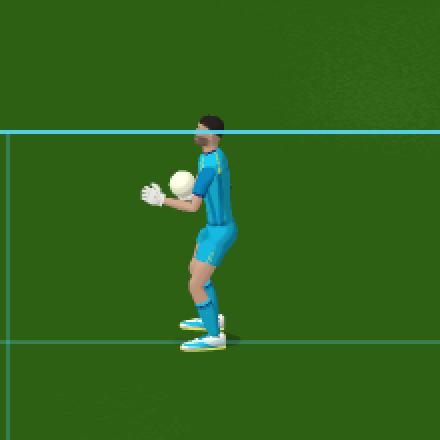
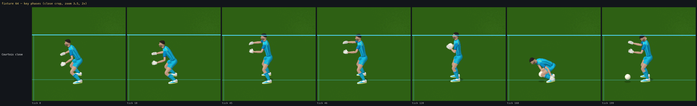
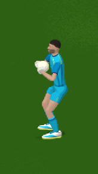
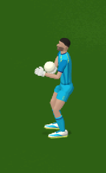
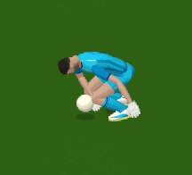
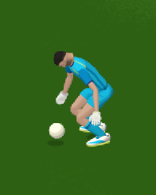
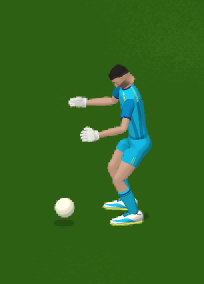
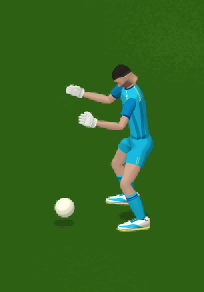
phases: READ (t0) → PREPARE (t18) → COMMIT (t45) → SAVE (t46) → SAVE (t97) → SAVE (t130) → SAVE (t162) → SAVE (t227) → SAVE (t259)
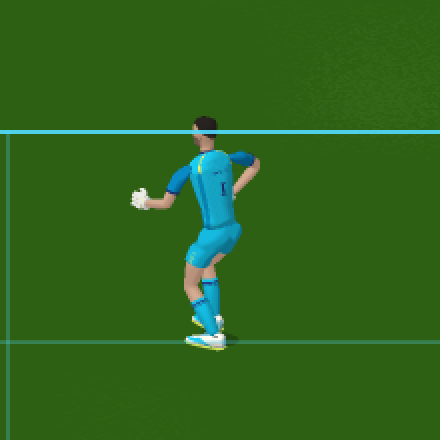
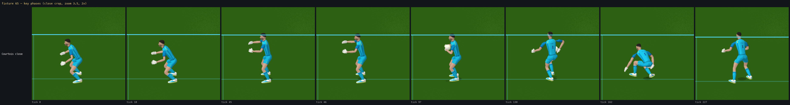
phases: READ (t0) → PREPARE (t18) → COMMIT (t45) → SAVE (t46) → SAVE (t97) → SAVE (t130) → SAVE (t162) → SAVE (t227) → SAVE (t259)
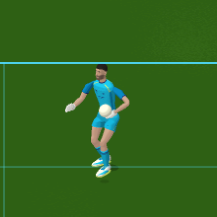
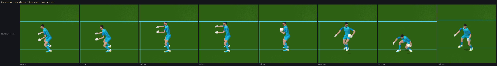
phases: READ (t0) → PREPARE (t18) → COMMIT (t45) → SAVE (t46) → SAVE (t97) → SAVE (t130) → SAVE (t162) → SAVE (t227) → SAVE (t259)
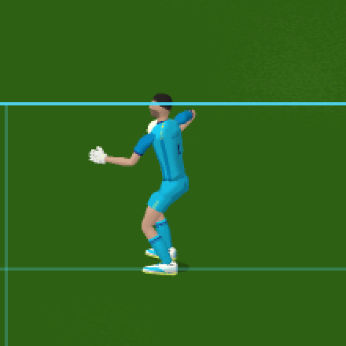
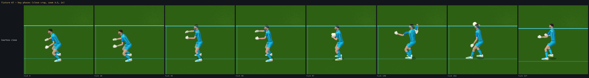
phases: READ (t0) → PREPARE (t18) → COMMIT (t45) → SAVE (t46) → SAVE (t97) → SAVE (t130) → SAVE (t162) → SAVE (t227) → SAVE (t259)
phases: READ (t0) → PREPARE (t18) → COMMIT (t45) → SAVE (t46) → SAVE (t97) → SAVE (t130) → SAVE (t162) → SAVE (t227) → SAVE (t259)
phases: READ (t0) → PREPARE (t18) → COMMIT (t45) → SAVE (t46) → SAVE (t97) → SAVE (t130) → SAVE (t162) → SAVE (t227) → SAVE (t259)
phases: READ (t0) → PREPARE (t18) → COMMIT (t45) → SAVE (t46) → SAVE (t97) → SAVE (t130) → SAVE (t162) → SAVE (t227) → SAVE (t259)
phases: READ (t0) → PREPARE (t18) → COMMIT (t45) → SAVE (t46) → SAVE (t75) → SAVE (t100) → SAVE (t124) → SAVE (t174) → SAVE (t199)
phases: GK_FAR_DIVE_R SET_CROUCH [SET] (t0) → READ (t21) → READ (t25) → PREPARE (t50) → PREPARE (t75) → SAVE (t84) → SAVE (t124) → SAVE (t149) → SAVE (t199)
phases: READ (t0) → PREPARE (t18) → PREPARE (t50) → COMMIT (t55) → SAVE (t75) → SAVE (t100) → SAVE (t124) → SAVE (t174) → SAVE (t199)
phases: GK_FAR_DIVE_R SET_CROUCH [SET] (t0) → READ (t21) → READ (t25) → PREPARE (t50) → COMMIT (t61) → SAVE (t75) → SAVE (t124) → SAVE (t149) → SAVE (t199)
phases: GK_FAR_DIVE_R SET_CROUCH [SET] (t0) → READ (t21) → READ (t25) → PREPARE (t50) → PREPARE (t75) → SAVE (t80) → SAVE (t124) → SAVE (t149) → SAVE (t199)
phases: GK_FAR_DIVE_R SET_CROUCH [SET] (t0) → GK_FAR_DIVE_R SET_CROUCH [SET_LOW] (t17) → READ (t34) → COMMIT (t49) → SAVE (t75) → SAVE (t100) → SAVE (t124) → SAVE (t174) → SAVE (t199)
phases: GK_FAR_DIVE_R SET_CROUCH [SET] (t0) → GK_FAR_DIVE_R SET_CROUCH [SET_LOW] (t17) → READ (t34) → COMMIT (t49) → SAVE (t75) → SAVE (t100) → SAVE (t124) → SAVE (t174) → SAVE (t199)
phases: GK_FAR_DIVE_R SET_CROUCH [SET] (t0) → READ (t12) → READ (t25) → COMMIT (t27) → SAVE (t50) → SAVE (t100) → SAVE (t124) → SAVE (t149) → SAVE (t199)
Recovery / half-kneel / get-up / READY are in the V6 lifecycles above (42: IMPACT t87 → ABSORB → SETTLE → BRACE → PUSH_UP → HALF_KNEEL t171 → CROUCH t192 → RISE t213 → SET).
| file | status | what |
|---|---|---|
assets/characters/courtois/Touchline_Player_courtois.glb | NEW (copied unchanged, sha256 verified) | the approved finished character: 29 non-indexed primitives, POSITION / NORMAL / TEXCOORD_0 / JOINTS_0 (uint16) / WEIGHTS_0 / COLOR_0 (linear float), one 512² kit atlas, 23-joint skin with its own inverse binds; default node pose = construction pose (not bind) — never used |
assets/characters/courtois/courtois_rig.json | NEW | Courtois's tall rig verbatim from Astra's manifest (per joint: offsetLocal, bindDirLocal, lengthM, radiusM, part, children, bindOriginM, the GLB inverse-bind matrix), H 2.014, proportions, glove frames, and the measured contact calibration (palm point / normal, fingertip, cuff, thumb, back-of-hand; sole depth, laces point / normal / along / up, toe extent) |
sandbox/visual/anim3d/gk_character_glb.js | NEW | character registry + loader (fetch GLB + rig, parse chunks / accessors / skin / image, joint-order check against the rig, colour-space-preserving image decode), gkCharSkeleton (runtime skeleton from the rig records: same bone objects the solver already uses — idx / off / dir / len / rad / part / parent / children / byName / H / prop, invBind = the GLB's own inverse binds, contact = the calibration; bind reconstruction check 1.19e-7 m), the WebGL2 character program (skinning by 24 bone matrices, the approved C shader: Soft-Cel tone, refined vertex colours, skin blend, glove latex, gear rubber, ink, kit atlas LINEAR without mipmaps, 8-bit display-value math), the 4-sample resolve (coverage → premultiplied, inward ink), the ROI helper and gkCharRender (FBO at ROI × density × 2, depth shared with the presentation ball) |
sandbox/visual/anim3d/gk3d_backend.js | MODIFIED | character selection (GL3D.character === "COURTOIS" → Courtois skeleton + character layer; anything else → the unchanged test skeleton + glRenderCharacters), layer composite into the 2D frame at the ROI, gk3dRenderLayer(density) (re-render of the last solved frame at any density for the Mixed tooling), GK3D.hideCharacter (environment-only pass) |
sandbox/visual/anim3d/gk_graph.js | MODIFIED (all new rules gated by skel.contact; the test-mesh path is byte-for-byte the frozen behaviour) | ball radius 0.11 independent of height (the old ballVisR·H/1.90 is gone — for every character); planted ankle height = measured sole depth; sole leveling (pitch + roll) of a planted boot; sole-corner floor test; leg floor re-applied after torso-assist re-FK, up to six ankle lifts; exact one-hand palm-on-ball hand solve (hand direction + palm normal from the solved wrist and the ball, least wrist flexion) + rigid palm twist; finished-glove two-hand sides grip; knuckle no-penetration through the hand-over blend; laces-point kick target with four passes and the boot rolled so the laces normal is in the vertical plane; metrics on the measured palm / laces points (palmNormalDot, lacesNormalDot, soleClearM, wristTargetErr, reachClamp) |
sandbox/visual/anim3d/gk_backend.js, sandbox/visual/match.html | MODIFIED | ?gkChar=courtois URL parameter, the COURTOIS entry in the character select, the new script |
sandbox/visual/tools/anim3d/capture.js, gk3d_gate.js | MODIFIED (review / regression tooling) | capture waits for the asset and fails loudly if it is not loaded; the gate gains --character, --backend off (nothing drawn) and --precision full (exact doubles + facing / ctrl / distribution events / camera columns) |
sandbox/visual/tools/anim3d/gk3d_capture_mixed.js | NEW (review tooling) | the Mixed / C native-output composition on the live scene (section 2) |
sandbox/visual/match.js (simulation), gk_motion_library.js, gk_backend.js action descriptions, gk_far_dive_clip.js (V6), camera | UNTOUCHED | no simulation, action, timing, event or camera change; no presentation RNG |
existing authored action rotations (the motion library's per-bone eulers for the current phase, unchanged) → Courtois tall FK (skelFK on the skeleton built from Courtois's exact bind offsets in Courtois's joint order; root applied once through g.rootM) → the existing procedural IK / contact solve (foot plants + sole leveling, ground clamp + leg floor, torso / clavicle assist, glove IK, the two-hand cradle, the distribution grips, the kick foot — every contact rule now reading the measured Courtois surfaces from skel.contact) → head look-at → skin matrices = world × the GLB's actual inverse binds → the character program. Not done, by design: no replay of shared-rig solved matrices, no copying of shared bind translations, no uniform scale, no rig from the roster height, no double root, no GLB construction-pose arm rotations, no re-run of the tall transfer. The original shared-rig path (test skeleton + capsule renderer) is untouched and remains the frozen V6 regression baseline.
| contact | measured on the GLB (bone-local bind frame) | rule in the solve | result (all fixtures, 300 ticks) |
|---|---|---|---|
| palm support point / normal | R [-0.0308, -0.0775, 0.029] n̂ [-1,0,0]; L [0.0287, -0.0773, 0.030] n̂ [1,0,0]; fingertip y −0.191; cuff y 0.009 | one hand: wrist at exactly √((r+0.0308)² + 0.0775² + 0.029²) = 0.163 m from the centre in the authored palm direction (projected ⊥ the forearm); then the hand direction and palm normal are SOLVED from the actual wrist and the ball (the palm point lands on the sphere along its normal; the free spin about the wrist→ball line picks the least wrist flexion); the hand is twisted rigidly so its palm normal is that normal | palm-to-surface 0.000 m, palm-normal · (ball − palm) = 1.00 on every tick where one hand alone holds the ball (carry, backswing, wind-up, release) in 64–79; within ±0.031 m through the 120 ms two-hand → one-hand hand-over blend |
| two-hand sides grip / cradle | same palm point | wrist = centre ± right·(r + 0.0308) − (up·0.55 + fwd·0.83)·0.0775, palm facing the centre; the 120 ms hand-over blends direction + distance on the sphere and swings the hand away from the centre until the knuckles clear the ball | knuckle penetration ≤ 4 cm on ≤ 5 hand-over ticks in 65, 66, 74, 75, 76, 78 (0 for the test keeper, whose proxy hand has no knuckles) — exposed, not hidden |
| sole / plant | sole 0.0944 m below the ankle; sole rectangle x ±0.078, z −0.081 … 0.128, toe corners at z 0.2 | planted ankle height 0.0944 (was 0.06·H); a planted boot is pitched to its bind slope AND rolled level; the floor test uses the six sole corners of the rotated boot; a leg under the pitch bends at the knee (up to six lifts), re-applied after every torso-assist re-FK | planted sole clearance 0.000 m in every standing phase (min −0.003 m, fixture 52 tight-angle plant); any-foot minimum −0.016 m (fixture 11, moving keeper) |
| laces / ball (punt) | laces point [0, 0.0087, 0.11], normal (0, 0.84, 0.292), 0.102 m along the foot axis, 0.041 m off it; toe extent z 0.0955 | ankle target = ball − n̂·(r + 0.041) − axis·0.102 with the foot's solved axis, four passes; the boot is rolled about its axis so the laces normal lies in its vertical plane | laces-to-ball 0.000 m at the authoritative KICK tick (70, 71, 75, 76), laces normal · (ball − laces) ≥ 0.99; 0.005 → 0.000 through the 7-tick blend-in |
| ball radius | — | 0.11 m for every character (the old ballVisR·H/1.90 gave 0.1059 for the test keeper and 0.1166 for the tall variant) | fixed; the test keeper's drawn ball and its cradle hands move ≤ 7 mm (its V6 manifest is unchanged) |
| torso exclusion / forearm-through-ball | Courtois radii from the rig | unchanged rules (elbow, upper-arm and forearm midpoints outside the torso volume and the ball) | 0 violations |
Unreachable residuals, reported rather than cheated: (1) the two-hand cradle flags on the low-dive catches 43 / 44 / 49 (34 / 34 / 1 ticks) are the same with the test keeper (35 / 35 / 2) — a pre-existing catch-library residual, not a Courtois effect; (2) the hand-over knuckle transients above; (3) the frozen V6 landing plan plants the bottom foot at its authored tuck height at IMPACT (fixture 42, ankle 0.188 m → sole 0.093 m above the pitch for one tick) — the V6 clip is frozen and was not modified; (4) the taller rig shifts some presentation phase boundaries by a few ticks (H-scaled plan distances): fixtures 8, 13, 14, 15, 25, 40, 42 list one extra sub-phase entry (e.g. HALF_KNEEL appears in 8; SET is reached inside 300 ticks) — presentation only, the simulation trace is identical.
gk3d_gate.js --precision full records per tick the exact doubles (shortest round-trip repr) of the keeper root + velocity, hand, leg tip, ball position + velocity, held flag, keeper state / phase, commit (action, t0, target, tick), contact (tick, volume, outcome, point), keeper facing, ball ctrl, every distribution event (RELEASE / DROP / KICK with tick, ball, velocity, root) and the camera rig after updateRig (x, y, zoom); the trace is hashed per fixture. All 80 fixtures × 260 ticks, and the 12 distribution fixtures × 300 ticks. Courtois ON ≡ test keeper ON ≡ sprite ≡ animation OFF on every fixture.
| scenario | SPRITE | OFF | SKELETAL_3D | SKELETAL_3D | commit tick | contact tick | identical | |
|---|---|---|---|---|---|---|---|---|
| 0 central ground | e9bb6e1333031745 | e9bb6e1333031745 | e9bb6e1333031745 | e9bb6e1333031745 | 52/52/52/52 | 89/89/89/89 | yes | |
| 1 low corner | 267f344a68024016 | 267f344a68024016 | 267f344a68024016 | 267f344a68024016 | 49/49/49/49 | None/None/None/None | yes | |
| 2 high corner | b16be16e5f0a4f43 | b16be16e5f0a4f43 | b16be16e5f0a4f43 | b16be16e5f0a4f43 | 43/43/43/43 | None/None/None/None | yes | |
| 3 near post | d98858a7b4758eb7 | d98858a7b4758eb7 | d98858a7b4758eb7 | d98858a7b4758eb7 | 49/49/49/49 | None/None/None/None | yes | |
| 4 far post | 052b55a79f019196 | 052b55a79f019196 | 052b55a79f019196 | 052b55a79f019196 | 49/49/49/49 | None/None/None/None | yes | |
| 5 close POWER | 6e5fec1f4865cc03 | 6e5fec1f4865cc03 | 6e5fec1f4865cc03 | 6e5fec1f4865cc03 | 43/43/43/43 | 31/31/31/31 | yes | |
| 6 long POWER | 910c00686e052963 | 910c00686e052963 | 910c00686e052963 | 910c00686e052963 | 43/43/43/43 | None/None/None/None | yes | |
| 7 curved INSIDE_R | 2770cd851b8f3592 | 2770cd851b8f3592 | 2770cd851b8f3592 | 2770cd851b8f3592 | 64/64/64/64 | 100/100/100/100 | yes | |
| 8 CHIP | 07f1232f7edf2cff | 07f1232f7edf2cff | 07f1232f7edf2cff | 07f1232f7edf2cff | 66/66/66/66 | 86/86/86/86 | yes | |
| 9 keeper set (centre) | 8ba110e852ee4133 | 8ba110e852ee4133 | 8ba110e852ee4133 | 8ba110e852ee4133 | 52/52/52/52 | 86/86/86/86 | yes | |
| 10 keeper mispositioned | cd2a74a0c0fd95ee | cd2a74a0c0fd95ee | cd2a74a0c0fd95ee | cd2a74a0c0fd95ee | 60/60/60/60 | 87/87/87/87 | yes | |
| 11 keeper already moving | fe5843e6bcd3b70d | fe5843e6bcd3b70d | fe5843e6bcd3b70d | fe5843e6bcd3b70d | 62/62/62/62 | 86/86/86/86 | yes | |
| 12 future max-reach | 2aedc1e9edff8a15 | 2aedc1e9edff8a15 | 2aedc1e9edff8a15 | 2aedc1e9edff8a15 | 49/49/49/49 | None/None/None/None | yes | |
| 13 legal under-bar top corner | f9f9a7bf4c158ef4 | f9f9a7bf4c158ef4 | f9f9a7bf4c158ef4 | f9f9a7bf4c158ef4 | 43/43/43/43 | None/None/None/None | yes | |
| 14 medium-height far side | 6c25710efedf0215 | 6c25710efedf0215 | 6c25710efedf0215 | 6c25710efedf0215 | 43/43/43/43 | None/None/None/None | yes | |
| 15 rocket top corner (unreachable) | fb19f52edf25d74e | fb19f52edf25d74e | fb19f52edf25d74e | fb19f52edf25d74e | 43/43/43/43 | None/None/None/None | yes | |
| 16 at left foot (low) | f1ad07c627720244 | f1ad07c627720244 | f1ad07c627720244 | f1ad07c627720244 | 49/49/49/49 | 71/71/71/71 | yes | |
| 17 at right foot (low) | ad7bafa19a0f91f6 | ad7bafa19a0f91f6 | ad7bafa19a0f91f6 | ad7bafa19a0f91f6 | 49/49/49/49 | 71/71/71/71 | yes | |
| 18 between legs (low) | 26759912950271e6 | 26759912950271e6 | 26759912950271e6 | 26759912950271e6 | 49/49/49/49 | 71/71/71/71 | yes | |
| 19 20cm outside L foot | c901b8b272cdeec3 | c901b8b272cdeec3 | c901b8b272cdeec3 | c901b8b272cdeec3 | 49/49/49/49 | 71/71/71/71 | yes | |
| 20 20cm outside R foot | ae9e40359b522bae | ae9e40359b522bae | ae9e40359b522bae | ae9e40359b522bae | 49/49/49/49 | 71/71/71/71 | yes | |
| 21 ankle-height low corner | b5979a6f3e188482 | b5979a6f3e188482 | b5979a6f3e188482 | b5979a6f3e188482 | 49/49/49/49 | None/None/None/None | yes | |
| 22 close POWER at feet | c94c952fb9c4d725 | c94c952fb9c4d725 | c94c952fb9c4d725 | c94c952fb9c4d725 | 43/43/43/43 | 34/34/34/34 | yes | |
| 23 low INSIDE_R at foot | 72d7ec55a5321d93 | 72d7ec55a5321d93 | 72d7ec55a5321d93 | 72d7ec55a5321d93 | 73/73/73/73 | 94/94/94/94 | yes | |
| 24 just beyond foot (hand) | 18f5f00b16c73a72 | 18f5f00b16c73a72 | 18f5f00b16c73a72 | 18f5f00b16c73a72 | 49/49/49/49 | 74/74/74/74 | yes | |
| 25 beyond both -> goal | e6d396ce8c889019 | e6d396ce8c889019 | e6d396ce8c889019 | e6d396ce8c889019 | 49/49/49/49 | None/None/None/None | yes | |
| 26 S4 easy central catch (CHIP lob into the hands) | 45cd14d860908eda | 45cd14d860908eda | 45cd14d860908eda | 45cd14d860908eda | 61/61/61/61 | 87/87/87/87 | yes | |
| 27 S4 chest gather (CHIP, hands+chest) | a7c451de29f50f31 | a7c451de29f50f31 | a7c451de29f50f31 | a7c451de29f50f31 | 79/79/79/79 | 105/105/105/105 | yes | |
| 28 S4 central hard shot parry (LACES 24 m/s) | ca3699f2d998fb44 | ca3699f2d998fb44 | ca3699f2d998fb44 | ca3699f2d998fb44 | 53/53/53/53 | 64/64/64/64 | yes | |
| 29 S4 low foot save (20 cm outside R foot) | ae9e40359b522bae | ae9e40359b522bae | ae9e40359b522bae | ae9e40359b522bae | 49/49/49/49 | 71/71/71/71 | yes | |
| 30 S4 shin block (synthetic lat 0.4 z 0.4 18 m/s) | 53312254d9a3cc3d | 53312254d9a3cc3d | 53312254d9a3cc3d | 53312254d9a3cc3d | 32/32/32/32 | 44/44/44/44 | yes | |
| 31 S4 body block (POWER 26 m/s at the chest) | 03d5779b0b038942 | 03d5779b0b038942 | 03d5779b0b038942 | 03d5779b0b038942 | 43/43/43/43 | 50/50/50/50 | yes | |
| 32 S4 comfortable lateral hand save (LACES 19 m/s) | 49f18efa7a4732c9 | 49f18efa7a4732c9 | 49f18efa7a4732c9 | 49f18efa7a4732c9 | 49/49/49/49 | 75/75/75/75 | yes | |
| 33 S4 lateral catch (synthetic lat 1.2 z 1.3 13 m/s) | 108891c318a0793b | 108891c318a0793b | 108891c318a0793b | 108891c318a0793b | 55/55/55/55 | 62/62/62/62 | yes | |
| 34 S4 full-extension controlled parry (norm ~0.96) | e3c9646418e225b9 | e3c9646418e225b9 | e3c9646418e225b9 | e3c9646418e225b9 | 49/49/49/49 | None/None/None/None | yes | |
| 35 S4 fingertip around the post (LACES 15 m/s) | a510cfde663012f1 | a510cfde663012f1 | a510cfde663012f1 | a510cfde663012f1 | 49/49/49/49 | None/None/None/None | yes | |
| 36 S4 fingertip over the bar (synthetic lat 1.4 z 2.45 17 m/s) | 59d318e6324cff24 | 59d318e6324cff24 | 59d318e6324cff24 | 59d318e6324cff24 | 15/15/15/15 | 47/47/47/47 | yes | |
| 37 S4 awkward spill — weak parry (POWER 27 m/s) | eb457f7b78d40687 | eb457f7b78d40687 | eb457f7b78d40687 | eb457f7b78d40687 | 43/43/43/43 | 54/54/54/54 | yes | |
| 38 S4 awkward spill — body block into the D | c85c631b746bcd2f | c85c631b746bcd2f | c85c631b746bcd2f | c85c631b746bcd2f | 61/61/61/61 | 69/69/69/69 | yes | |
| 39 S4 fingertip deflection into the net (synthetic lat 2.02 z 1.2 21 m/s) | 722ef07daee4c250 | 722ef07daee4c250 | 722ef07daee4c250 | 722ef07daee4c250 | 15/15/15/15 | None/None/None/None | yes | |
| 40 S4 unreachable rocket stays untouched | fb19f52edf25d74e | fb19f52edf25d74e | fb19f52edf25d74e | fb19f52edf25d74e | 43/43/43/43 | None/None/None/None | yes | |
| 41 S4 handling probe (synthetic lat 1.0 z 1.2 21 m/s — T cycles handling) | 0f0c6beada57c911 | 0f0c6beada57c911 | 0f0c6beada57c911 | 0f0c6beada57c911 | 27/27/27/27 | 37/37/37/37 | yes | |
| 42 S4 K2 high tip-up (POWER 28 m/s under the bar) | 45a095f25c187f52 | 45a095f25c187f52 | 45a095f25c187f52 | 45a095f25c187f52 | 38/38/38/38 | 62/62/62/62 | yes | |
| 43 M3 low dive LEFT, hand (synthK lat -1.4 z 0.35 15 m/s) | 1b3a97458453224e | 1b3a97458453224e | 1b3a97458453224e | 1b3a97458453224e | 13/13/13/13 | 53/53/53/53 | yes | |
| 44 M3 low dive RIGHT, hand (synthK lat 1.4 z 0.35 15 m/s) | 5ab92da135a65ebb | 5ab92da135a65ebb | 5ab92da135a65ebb | 5ab92da135a65ebb | 13/13/13/13 | 53/53/53/53 | yes | |
| 45 M3 chest catch (synthK lat 0.05 z 1.15 15 m/s) | 98bbf7b3c8a70bd6 | 98bbf7b3c8a70bd6 | 98bbf7b3c8a70bd6 | 98bbf7b3c8a70bd6 | 45/45/45/45 | 53/53/53/53 | yes | |
| 46 M3 high ball, real chip (CHIP 0.55) | bf2b7c59abd1d089 | bf2b7c59abd1d089 | bf2b7c59abd1d089 | bf2b7c59abd1d089 | 84/84/84/84 | 91/91/91/91 | yes | |
| 47 M3 near-body LEFT (synthK lat -0.9 z 1.3 17 m/s) | 184bdf4fff7f1dd1 | 184bdf4fff7f1dd1 | 184bdf4fff7f1dd1 | 184bdf4fff7f1dd1 | 40/40/40/40 | 46/46/46/46 | yes | |
| 48 M3 foot save RIGHT wide (synthK lat 0.55 z 0.05 14 m/s) | 1a1c5dccde346982 | 1a1c5dccde346982 | 1a1c5dccde346982 | 1a1c5dccde346982 | 26/26/26/26 | 57/57/57/57 | yes | |
| 49 M3 far dive LEFT TOP (synthK lat -1.6 z 2.0 18 m/s) | 7f05dc258d087466 | 7f05dc258d087466 | 7f05dc258d087466 | 7f05dc258d087466 | 34/34/34/34 | 44/44/44/44 | yes | |
| 50 M3 SW-facing far dive (from the south) | ed5f0d9b14938389 | ed5f0d9b14938389 | ed5f0d9b14938389 | ed5f0d9b14938389 | 22/22/22/22 | None/None/None/None | yes | |
| 51 M3 NW-facing low dive (from the north) | afae22d175c78cc8 | afae22d175c78cc8 | afae22d175c78cc8 | afae22d175c78cc8 | 22/22/22/22 | None/None/None/None | yes | |
| 52 M3 S-facing tight angle, high across | 9476d50a3a3a3ccf | 9476d50a3a3a3ccf | 9476d50a3a3a3ccf | 9476d50a3a3a3ccf | 22/22/22/22 | 32/32/32/32 | yes | |
| 53 M3 N-facing tight angle, low across | 206a028c7c7c40d2 | 206a028c7c7c40d2 | 206a028c7c7c40d2 | 206a028c7c7c40d2 | 22/22/22/22 | 35/35/35/35 | yes | |
| 54 M3 moving keeper into a chest catch (gkv 0,-3) | 3814d680e53d2b07 | 3814d680e53d2b07 | 3814d680e53d2b07 | 3814d680e53d2b07 | 60/60/60/60 | 67/67/67/67 | yes | |
| 55 M3b foot save RIGHT wide (aim 33.2, lat +0.59) | 4083571a340b097a | 4083571a340b097a | 4083571a340b097a | 4083571a340b097a | 46/46/46/46 | 70/70/70/70 | yes | |
| 56 M3b foot save LEFT wide (aim 34.78, lat -0.58) | 6164ed0dff280bd9 | 6164ed0dff280bd9 | 6164ed0dff280bd9 | 6164ed0dff280bd9 | 46/46/46/46 | 70/70/70/70 | yes | |
| 57 M3b SW-facing foot save RIGHT (from the south, aim 34.2) | 7cfb90f887e94c16 | 7cfb90f887e94c16 | 7cfb90f887e94c16 | 7cfb90f887e94c16 | 22/22/22/22 | 33/33/33/33 | yes | |
| 58 M3b NW-facing foot save LEFT (from the north, aim 33.8) | d9a0828f34465381 | d9a0828f34465381 | d9a0828f34465381 | d9a0828f34465381 | 22/22/22/22 | 33/33/33/33 | yes | |
| 59 M3b SSW-facing foot save RIGHT (from [96,40], aim 33.9) | 4e715d876dac9370 | 4e715d876dac9370 | 4e715d876dac9370 | 4e715d876dac9370 | 22/22/22/22 | 38/38/38/38 | yes | |
| 60 M3b NNW-facing foot save LEFT (from [96,28], aim 34.1) | b7ae26ed03b070f4 | b7ae26ed03b070f4 | b7ae26ed03b070f4 | b7ae26ed03b070f4 | 22/22/22/22 | 38/38/38/38 | yes | |
| 61 M3c SW-facing chest catch (from the south, synthK z 1.15) | b7e0d38e70986bf0 | b7e0d38e70986bf0 | b7e0d38e70986bf0 | b7e0d38e70986bf0 | 11/11/11/11 | 20/20/20/20 | yes | |
| 62 M3c NW-facing chest catch (from the north, synthK z 1.2) | 26e072db8d360d3b | 26e072db8d360d3b | 26e072db8d360d3b | 26e072db8d360d3b | 11/11/11/11 | 20/20/20/20 | yes | |
| 63 M3c SSW-facing chest catch (from [96,40], synthK z 1.1) | 51bc2d95d7adb36c | 51bc2d95d7adb36c | 51bc2d95d7adb36c | 51bc2d95d7adb36c | 19/19/19/19 | 26/26/26/26 | yes | |
| 64 D1 PUT DOWN central (chest catch → place ahead → free ball) | e316b59b78d9d247 | e316b59b78d9d247 | e316b59b78d9d247 | e316b59b78d9d247 | 45/45/45/45 | 53/53/53/53 | yes | |
| 65 D2 HAND ROLL RIGHT (target [96, 26], right hand) | 02667804f3d4a774 | 02667804f3d4a774 | 02667804f3d4a774 | 02667804f3d4a774 | 45/45/45/45 | 53/53/53/53 | yes | |
| 66 D2 HAND ROLL LEFT (target [96, 42], left hand) | 32954c31372927cf | 32954c31372927cf | 32954c31372927cf | 32954c31372927cf | 45/45/45/45 | 53/53/53/53 | yes | |
| 67 D3 OVERARM THROW RIGHT (target [78, 24]) | 9c0f8ab21b0375e8 | 9c0f8ab21b0375e8 | 9c0f8ab21b0375e8 | 9c0f8ab21b0375e8 | 45/45/45/45 | 53/53/53/53 | yes | |
| 68 D3 OVERARM THROW LEFT (target [78, 44]) | caa54c51f12dda7f | caa54c51f12dda7f | caa54c51f12dda7f | caa54c51f12dda7f | 45/45/45/45 | 53/53/53/53 | yes | |
| 69 D3 OVERARM THROW far, straight (target [62, 34]) | 29aca0e9f40cf791 | 29aca0e9f40cf791 | 29aca0e9f40cf791 | 29aca0e9f40cf791 | 45/45/45/45 | 53/53/53/53 | yes | |
| 70 D4 PUNT RIGHT foot (target [55, 34]) | 50b011daf7908024 | 50b011daf7908024 | 50b011daf7908024 | 50b011daf7908024 | 45/45/45/45 | 53/53/53/53 | yes | |
| 71 D4 PUNT LEFT foot (target [55, 34]) | 198ee0343732822e | 198ee0343732822e | 198ee0343732822e | 198ee0343732822e | 45/45/45/45 | 53/53/53/53 | yes | |
| 72 D5 angled: SW-facing catch → PUT DOWN (body must turn to face out) | 54a917bbe48edbb5 | 54a917bbe48edbb5 | 54a917bbe48edbb5 | 54a917bbe48edbb5 | 11/11/11/11 | 20/20/20/20 | yes | |
| 73 D5 angled: NW-facing catch → THROW to the far side (target [80, 46]) | 09ca2aa1060b20d8 | 09ca2aa1060b20d8 | 09ca2aa1060b20d8 | 09ca2aa1060b20d8 | 11/11/11/11 | 20/20/20/20 | yes | |
| 74 D5 angled: SSW-facing catch → ROLL across (target [98, 42]) | 50a798ee6ce48d74 | 50a798ee6ce48d74 | 50a798ee6ce48d74 | 50a798ee6ce48d74 | 19/19/19/19 | 26/26/26/26 | yes | |
| 75 D5 angled: SW-facing catch → PUNT left foot (target [50, 30]) | 82c6b249ffcd5acd | 82c6b249ffcd5acd | 82c6b249ffcd5acd | 82c6b249ffcd5acd | 11/11/11/11 | 20/20/20/20 | yes | |
| 76 D6 front view: PUNT right foot toward the camera (target [96, 60]) | dde6c3372e33244e | dde6c3372e33244e | dde6c3372e33244e | dde6c3372e33244e | 45/45/45/45 | 53/53/53/53 | yes | |
| 77 D6 front view: THROW toward the camera (target [92, 58]) | b1188fdd4a362342 | b1188fdd4a362342 | b1188fdd4a362342 | b1188fdd4a362342 | 45/45/45/45 | 53/53/53/53 | yes | |
| 78 D6 front view: ROLL toward the camera (target [99, 50]) | 680eda8e6c5fe446 | 680eda8e6c5fe446 | 680eda8e6c5fe446 | 680eda8e6c5fe446 | 45/45/45/45 | 53/53/53/53 | yes | |
| 79 D6 front view: PUT DOWN facing the camera (target [101, 60]) | 1e109cbe5037f2f4 | 1e109cbe5037f2f4 | 1e109cbe5037f2f4 | 1e109cbe5037f2f4 | 45/45/45/45 | 53/53/53/53 | yes | |
| ALL IDENTICAL: YES | ||||||||
| SPRITE perf {'n': 20800, 'avgMs': 0.01315384593147498, 'maxMs': 124.59999990463257, 'draws': None, 'target': None} errors [] | ||||||||
| OFF perf {'n': 0, 'avgMs': 0, 'maxMs': 0, 'draws': None, 'target': None} errors [] | ||||||||
| SKELETAL_3D perf {'n': 20800, 'avgMs': 0.8388653850326171, 'maxMs': 18.799999952316284, 'draws': 2, 'target': '550x450 (1/2)'} errors [] | ||||||||
| SKELETAL_3D perf {'n': 20800, 'avgMs': 0.9922115381062031, 'maxMs': 160.70000004768372, 'draws': 30, 'target': '44x60 (1/undefined)'} errors [] | ||||||||
| scenario | SPRITE | OFF | SKELETAL_3D | SKELETAL_3D | commit tick | contact tick | identical | |
|---|---|---|---|---|---|---|---|---|
| 64 D1 PUT DOWN central (chest catch → place ahead → free ball) | e99a700c2effa9b8 | e99a700c2effa9b8 | e99a700c2effa9b8 | e99a700c2effa9b8 | 45/45/45/45 | 53/53/53/53 | yes | |
| 65 D2 HAND ROLL RIGHT (target [96, 26], right hand) | f491988b6ff04d49 | f491988b6ff04d49 | f491988b6ff04d49 | f491988b6ff04d49 | 45/45/45/45 | 53/53/53/53 | yes | |
| 66 D2 HAND ROLL LEFT (target [96, 42], left hand) | c2a8fb60ff8a7de1 | c2a8fb60ff8a7de1 | c2a8fb60ff8a7de1 | c2a8fb60ff8a7de1 | 45/45/45/45 | 53/53/53/53 | yes | |
| 67 D3 OVERARM THROW RIGHT (target [78, 24]) | 40e392b0af6cd7dc | 40e392b0af6cd7dc | 40e392b0af6cd7dc | 40e392b0af6cd7dc | 45/45/45/45 | 53/53/53/53 | yes | |
| 68 D3 OVERARM THROW LEFT (target [78, 44]) | 3a68e966e1bcd60f | 3a68e966e1bcd60f | 3a68e966e1bcd60f | 3a68e966e1bcd60f | 45/45/45/45 | 53/53/53/53 | yes | |
| 69 D3 OVERARM THROW far, straight (target [62, 34]) | ae73943371e7b6f7 | ae73943371e7b6f7 | ae73943371e7b6f7 | ae73943371e7b6f7 | 45/45/45/45 | 53/53/53/53 | yes | |
| 70 D4 PUNT RIGHT foot (target [55, 34]) | 070f71ed2f48bfc2 | 070f71ed2f48bfc2 | 070f71ed2f48bfc2 | 070f71ed2f48bfc2 | 45/45/45/45 | 53/53/53/53 | yes | |
| 71 D4 PUNT LEFT foot (target [55, 34]) | 78cc9f31e4d860a1 | 78cc9f31e4d860a1 | 78cc9f31e4d860a1 | 78cc9f31e4d860a1 | 45/45/45/45 | 53/53/53/53 | yes | |
| 72 D5 angled: SW-facing catch → PUT DOWN (body must turn to face out) | ad323bb86fca7b1d | ad323bb86fca7b1d | ad323bb86fca7b1d | ad323bb86fca7b1d | 15/15/15/15 | 21/21/21/21 | yes | |
| 73 D5 angled: NW-facing catch → THROW to the far side (target [80, 46]) | 3c03a7ebe749160a | 3c03a7ebe749160a | 3c03a7ebe749160a | 3c03a7ebe749160a | 15/15/15/15 | 21/21/21/21 | yes | |
| 74 D5 angled: SSW-facing catch → ROLL across (target [98, 42]) | 1b9f16c3f94c2e8b | 1b9f16c3f94c2e8b | 1b9f16c3f94c2e8b | 1b9f16c3f94c2e8b | 18/18/18/18 | 26/26/26/26 | yes | |
| 75 D5 angled: SW-facing catch → PUNT left foot (target [50, 30]) | ec3405a31b3690c4 | ec3405a31b3690c4 | ec3405a31b3690c4 | ec3405a31b3690c4 | 15/15/15/15 | 21/21/21/21 | yes | |
| ALL IDENTICAL: YES | ||||||||
| SPRITE perf {'n': 3600, 'avgMs': 0.008833333916134304, 'maxMs': 2.700000047683716, 'draws': None, 'target': None} errors [] | ||||||||
| OFF perf {'n': 0, 'avgMs': 0, 'maxMs': 0, 'draws': None, 'target': None} errors [] | ||||||||
| SKELETAL_3D perf {'n': 3600, 'avgMs': 3.0663333331214058, 'maxMs': 47.299999952316284, 'draws': 1, 'target': '550x450 (1/2)'} errors [] | ||||||||
| SKELETAL_3D perf {'n': 3600, 'avgMs': 4.327138891352548, 'maxMs': 464.10000014305115, 'draws': 29, 'target': '36x59 (1/undefined)'} errors [] | ||||||||
gk_motion_manifest.js, per-tick pose eulers + joint world positions) vs the v13.1 baseline| fixture | fields differing vs v13.1 (rows) | max joint displacement [m] | verdict |
|---|---|---|---|
| 42 S4 K2 high tip-up (POWER 28 m/s under th | — | — | IDENTICAL |
| 45 M3 chest catch (synthK lat 0.05 z 1.15 1 | ballPres.r (320), hands (272), elbows (272), gloveResidual (267), ballPres.p (262) | hand_R_tip 0.007, hand_L_tip 0.007, hand_R 0.007, hand_L 0.006 | ball radius → cradle hands ≤ 0.007 m |
| 55 M3b foot save RIGHT wide (aim 33.2, lat | ballPres.p (319), ballPres.r (320) | — | ball radius only (drawn ball) |
| 56 M3b foot save LEFT wide (aim 34.78, lat | ballPres.p (319), ballPres.r (320) | — | ball radius only (drawn ball) |
| 57 M3b SW-facing foot save RIGHT (from the | ballPres.p (319), ballPres.r (320) | — | ball radius only (drawn ball) |
| 58 M3b NW-facing foot save LEFT (from the n | ballPres.p (319), ballPres.r (320) | — | ball radius only (drawn ball) |
| 59 M3b SSW-facing foot save RIGHT (from [96 | ballPres.p (319), ballPres.r (320) | — | ball radius only (drawn ball) |
| 60 M3b NNW-facing foot save LEFT (from [96, | ballPres.p (319), ballPres.r (320) | — | ball radius only (drawn ball) |
| 64 D1 PUT DOWN central (chest catch → place | ballPres.r (300), hands (121), elbows (122), gloveResidual (60), ballPres.p (242), dist (49) | hand_R_tip 0.071, hand_R 0.048, foreArm_R 0.047, hand_L_tip 0.007 | ball radius → cradle hands ≤ 0.071 m |
| 65 D2 HAND ROLL RIGHT (target [96, 26], rig | ballPres.r (300), hands (132), elbows (130), gloveResidual (60), ballPres.p (241), dist (61) | hand_R 0.035, hand_R_tip 0.032, foreArm_R 0.013, hand_L_tip 0.007 | ball radius → cradle hands ≤ 0.035 m |
| 66 D2 HAND ROLL LEFT (target [96, 42], left | ballPres.r (300), hands (132), elbows (130), gloveResidual (60), ballPres.p (241), dist (61) | hand_L 0.035, hand_L_tip 0.032, foreArm_L 0.013, hand_R_tip 0.007 | ball radius → cradle hands ≤ 0.035 m |
| 67 D3 OVERARM THROW RIGHT (target [78, 24]) | ballPres.r (300), hands (124), elbows (125), gloveResidual (60), ballPres.p (80), dist (54) | foreArm_R 0.057, hand_R_tip 0.031, hand_R 0.019, hand_L_tip 0.007 | ball radius → cradle hands ≤ 0.057 m |
| 68 D3 OVERARM THROW LEFT (target [78, 44]) | ballPres.r (300), hands (124), elbows (125), gloveResidual (60), ballPres.p (80), dist (54) | foreArm_L 0.057, hand_L_tip 0.031, hand_L 0.019, hand_R_tip 0.007 | ball radius → cradle hands ≤ 0.057 m |
| 69 D3 OVERARM THROW far, straight (target [ | ballPres.r (300), hands (123), elbows (123), gloveResidual (60), ballPres.p (72), dist (53) | foreArm_R 0.056, hand_R_tip 0.031, hand_R 0.019, hand_L_tip 0.007 | ball radius → cradle hands ≤ 0.056 m |
| 70 D4 PUNT RIGHT foot (target [55, 34]) | ballPres.r (300), hands (117), elbows (116), gloveResidual (60), ballPres.p (75), dist (64) | hand_R_tip 0.095, hand_R 0.058, foreArm_R 0.053, hand_L_tip 0.007 | ball radius → cradle hands ≤ 0.095 m |
| 71 D4 PUNT LEFT foot (target [55, 34]) | ballPres.r (300), hands (117), elbows (116), gloveResidual (60), ballPres.p (75), dist (64) | hand_L_tip 0.095, hand_L 0.058, foreArm_L 0.053, hand_R_tip 0.007 | ball radius → cradle hands ≤ 0.095 m |
| 72 D5 angled: SW-facing catch → PUT DOWN (b | ballPres.r (300), hands (121), gloveResidual (64), elbows (120), ballPres.p (279), dist (50) | hand_R_tip 0.073, hand_R 0.049, foreArm_R 0.047, hand_L_tip 0.008 | ball radius → cradle hands ≤ 0.073 m |
| 73 D5 angled: NW-facing catch → THROW to th | ballPres.r (300), hands (124), elbows (123), gloveResidual (64), ballPres.p (96), dist (54) | foreArm_L 0.047, hand_L_tip 0.018, hand_L 0.014, foreArm_R 0.011 | ball radius → cradle hands ≤ 0.047 m |
| 74 D5 angled: SSW-facing catch → ROLL acros | ballPres.r (300), hands (133), elbows (130), gloveResidual (58), ballPres.p (264), dist (61) | foreArm_L 0.037, hand_L_tip 0.017, hand_L 0.011, hand_R_tip 0.007 | ball radius → cradle hands ≤ 0.037 m |
| 75 D5 angled: SW-facing catch → PUNT left f | ballPres.r (300), hands (116), gloveResidual (64), elbows (111), ballPres.p (82), dist (63) | hand_L_tip 0.096, hand_L 0.056, foreArm_L 0.053, hand_R_tip 0.007 | ball radius → cradle hands ≤ 0.096 m |
totals — test keeper: bad asserts 0, hand/ball flags 0, cradle flags 72, 1.54 ms/tick · Courtois: bad asserts 0, hand/ball flags 16, cradle flags 69, 2.40 ms/tick (single page, all fixtures in sequence; the first fixtures include JIT warm-up).
| fixture | final sim state | bad continuity asserts (test / Courtois) | hand/ball flags (test / Courtois) | cradle flags (test / Courtois) | sole clearance min, planted [m] | sole clearance min, any [m] | palm-to-ball surface one-hand [m] (min … max, palm-normal dot min) | laces-to-ball surface in the live kick window [m] | max leg-floor lift [m] | solve ms/tick (Courtois) |
|---|---|---|---|---|---|---|---|---|---|---|
| 0 central ground | CATCH | 0 / 0 | 0 / 0 | 0 / 0 | 0 | 0 | 0.01 | 2.305 | ||
| 1 low corner | COMMITTED* | 0 / 1 | 0 / 0 | 0 / 0 | 0 | 0 | 0.3 | 5.5227 | ||
| 2 high corner | COMMITTED* | 0 / 0 | 0 / 0 | 0 / 0 | 0 | -0.0002 | 0.17 | 3.9403 | ||
| 3 near post | COMMITTED* | 0 / 1 | 0 / 0 | 0 / 0 | 0 | 0 | 0.3 | 3.9947 | ||
| 4 far post | COMMITTED* | 0 / 1 | 0 / 0 | 0 / 0 | 0 | 0 | 0.3 | 4.159 | ||
| 5 close POWER | CONTACT | 0 / 0 | 0 / 0 | 0 / 0 | 0 | 0 | 0.23 | 3.4687 | ||
| 6 long POWER | COMMITTED* | 0 / 0 | 0 / 0 | 0 / 0 | 0 | -0.0004 | 0.17 | 4.164 | ||
| 7 curved INSIDE_R | CATCH | 0 / 0 | 0 / 0 | 0 / 0 | 0 | 0 | 0.02 | 2.6747 | ||
| 8 CHIP | SET | 0 / 0 | 0 / 0 | 0 / 0 | 0 | -0.0017 | 0.17 | 4.376 | ||
| 9 keeper set (centre) | CATCH | 0 / 0 | 0 / 0 | 0 / 0 | 0 | 0 | 0.01 | 2.9567 | ||
| 10 keeper mispositioned | CATCH | 0 / 1 | 0 / 0 | 0 / 0 | 0 | 0 | 0.3 | 5.121 | ||
| 11 keeper already moving | CATCH | 0 / 1 | 0 / 0 | 0 / 0 | -0.0008 | -0.0161 | 0.53 | 3.6717 | ||
| 12 future max-reach | COMMITTED* | 0 / 1 | 0 / 0 | 0 / 0 | 0 | 0 | 0.3 | 4.5687 | ||
| 13 legal under-bar top corner | COMMITTED | 0 / 0 | 0 / 0 | 0 / 0 | 0 | 0 | 0.18 | 4.4133 | ||
| 14 medium-height far side | COMMITTED* | 0 / 0 | 0 / 0 | 0 / 0 | 0 | 0 | 0.37 | 4.008 | ||
| 15 rocket top corner (unreachable) | COMMITTED* | 0 / 0 | 0 / 0 | 0 / 0 | -0.0002 | -0.0002 | 0.08 | 4.2953 | ||
| 16 at left foot (low) | CONTACT | 0 / 0 | 0 / 0 | 0 / 0 | 0 | -0.0056 | 0.23 | 2.74 | ||
| 17 at right foot (low) | CONTACT | 0 / 0 | 0 / 0 | 0 / 0 | 0 | -0.0056 | 0.23 | 4.049 | ||
| 18 between legs (low) | CONTACT | 0 / 0 | 0 / 0 | 0 / 0 | 0 | -0.0064 | 0.57 | 3.8713 | ||
| 19 20cm outside L foot | CONTACT | 0 / 0 | 0 / 0 | 0 / 0 | 0 | 0 | 0.23 | 2.319 | ||
| 20 20cm outside R foot | CONTACT | 0 / 0 | 0 / 0 | 0 / 0 | 0 | 0 | 0.23 | 0.9387 | ||
| 21 ankle-height low corner | COMMITTED* | 0 / 1 | 0 / 0 | 0 / 0 | 0 | 0 | 0.3 | 1.185 | ||
| 22 close POWER at feet | CONTACT | 0 / 0 | 0 / 0 | 0 / 0 | 0 | -0.0058 | 0.23 | 0.9927 | ||
| 23 low INSIDE_R at foot | CATCH | 0 / 0 | 0 / 0 | 0 / 0 | 0 | -0.0105 | 0.54 | 0.8557 | ||
| 24 just beyond foot (hand) | CONTACT | 0 / 1 | 0 / 0 | 0 / 0 | 0 | 0 | 0.3 | 1.045 | ||
| 25 beyond both -> goal | COMMITTED* | 0 / 1 | 0 / 0 | 0 / 0 | 0 | 0 | 0.3 | 1.398 | ||
| 26 S4 easy central catch (CHIP lob into the hands) | CATCH | 0 / 0 | 0 / 0 | 0 / 0 | 0 | 0 | 0.01 | 1.377 | ||
| 27 S4 chest gather (CHIP, hands+chest) | CATCH | 0 / 0 | 0 / 0 | 0 / 0 | 0 | 0 | 0.01 | 0.9583 | ||
| 28 S4 central hard shot parry (LACES 24 m/s) | SET | 0 / 0 | 0 / 0 | 0 / 0 | -0.0001 | -0.0002 | 0.02 | 1.872 | ||
| 29 S4 low foot save (20 cm outside R foot) | CONTACT | 0 / 0 | 0 / 0 | 0 / 0 | 0 | 0 | 0.23 | 2.3207 | ||
| 30 S4 shin block (synthetic lat 0.4 z 0.4 18 m/s) | CATCH | 0 / 0 | 0 / 0 | 0 / 0 | 0 | 0 | 0.02 | 1.3097 | ||
| 31 S4 body block (POWER 26 m/s at the chest) | CONTACT | 0 / 0 | 0 / 0 | 0 / 0 | -0.0002 | -0.0002 | 0.02 | 1.8187 | ||
| 32 S4 comfortable lateral hand save (LACES 19 m/s) | CATCH | 0 / 0 | 0 / 0 | 0 / 0 | 0 | 0 | 0.55 | 2.876 | ||
| 33 S4 lateral catch (synthetic lat 1.2 z 1.3 13 m/s) | CATCH | 0 / 0 | 0 / 0 | 0 / 0 | 0 | 0 | 0.14 | 1.2957 | ||
| 34 S4 full-extension controlled parry (norm ~0.96) | COMMITTED* | 0 / 1 | 0 / 0 | 0 / 0 | 0 | 0 | 0.3 | 2.7483 | ||
| 35 S4 fingertip around the post (LACES 15 m/s) | COMMITTED* | 0 / 1 | 0 / 0 | 0 / 0 | 0 | 0 | 0.3 | 1.603 | ||
| 36 S4 fingertip over the bar (synthetic lat 1.4 z 2.45 | CONTACT | 0 / 0 | 0 / 0 | 0 / 0 | 0 | -0.0002 | 0.17 | 1.799 | ||
| 37 S4 awkward spill — weak parry (POWER 27 m/s) | CONTACT | 0 / 0 | 0 / 0 | 0 / 0 | -0.0002 | -0.0002 | 0.02 | 1.011 | ||
| 38 S4 awkward spill — body block into the D | SET | 0 / 0 | 0 / 0 | 0 / 0 | -0.0002 | -0.0002 | 0.02 | 2.4673 | ||
| 39 S4 fingertip deflection into the net (synthetic lat | COMMITTED | 0 / 0 | 0 / 0 | 0 / 0 | 0 | 0 | 0.08 | 2.2927 | ||
| 40 S4 unreachable rocket stays untouched | COMMITTED* | 0 / 0 | 0 / 0 | 0 / 0 | -0.0002 | -0.0002 | 0.08 | 1.5783 | ||
| 41 S4 handling probe (synthetic lat 1.0 z 1.2 21 m/s — | CONTACT | 0 / 0 | 0 / 0 | 0 / 0 | 0 | 0 | 0.01 | 0.3217 | ||
| 42 S4 K2 high tip-up (POWER 28 m/s under the bar) | CONTACT | 0 / 0 | 0 / 0 | 0 / 0 | 0 | -0.0006 | 0.17 | 3.6663 | ||
| 43 M3 low dive LEFT, hand (synthK lat -1.4 z 0.35 15 m/ | CATCH | 0 / 0 | 0 / 0 | 35 / 34 | 0 | 0 | 0.08 | 1.1387 | ||
| 44 M3 low dive RIGHT, hand (synthK lat 1.4 z 0.35 15 m/ | CATCH | 0 / 0 | 0 / 0 | 35 / 34 | 0 | 0 | 0.08 | 1.88 | ||
| 45 M3 chest catch (synthK lat 0.05 z 1.15 15 m/s) | CATCH | 0 / 0 | 0 / 0 | 0 / 0 | 0 | 0 | 0.01 | 1.8787 | ||
| 46 M3 high ball, real chip (CHIP 0.55) | CATCH | 0 / 0 | 0 / 0 | 0 / 0 | -0.0001 | -0.0001 | 0.02 | 2.1993 | ||
| 47 M3 near-body LEFT (synthK lat -0.9 z 1.3 17 m/s) | CATCH | 0 / 0 | 0 / 0 | 0 / 0 | 0 | 0 | 0.14 | 1.771 | ||
| 48 M3 foot save RIGHT wide (synthK lat 0.55 z 0.05 14 m | CATCH | 0 / 0 | 0 / 0 | 0 / 0 | 0 | 0 | 0.01 | 1.8867 | ||
| 49 M3 far dive LEFT TOP (synthK lat -1.6 z 2.0 18 m/s) | CATCH | 1 / 0 | 0 / 0 | 2 / 1 | 0 | 0 | 0.14 | 1.8887 | ||
| 50 M3 SW-facing far dive (from the south) | COMMITTED | 0 / 0 | 0 / 0 | 0 / 0 | 0 | 0 | 0.57 | 2.2053 | ||
| 51 M3 NW-facing low dive (from the north) | COMMITTED | 0 / 1 | 0 / 0 | 0 / 0 | 0 | 0 | 0.3 | 2.0237 | ||
| 52 M3 S-facing tight angle, high across | CONTACT | 0 / 0 | 0 / 0 | 0 / 0 | -0.0033 | -0.0033 | 0.57 | 1.4147 | ||
| 53 M3 N-facing tight angle, low across | CONTACT | 0 / 0 | 0 / 0 | 0 / 0 | 0 | 0 | 0.57 | 2.373 | ||
| 54 M3 moving keeper into a chest catch (gkv 0,-3) | CATCH | 0 / 0 | 0 / 0 | 0 / 0 | 0 | 0 | 0.01 | 0.675 | ||
| 55 M3b foot save RIGHT wide (aim 33.2, lat +0.59) | CATCH | 0 / 0 | 0 / 0 | 0 / 0 | 0 | 0 | 0.23 | 2.2913 | ||
| 56 M3b foot save LEFT wide (aim 34.78, lat -0.58) | CATCH | 0 / 0 | 0 / 0 | 0 / 0 | 0 | 0 | 0.23 | 2.218 | ||
| 57 M3b SW-facing foot save RIGHT (from the south, aim 3 | CONTACT | 0 / 0 | 0 / 0 | 0 / 0 | 0 | -0.0003 | 0.23 | 1.7177 | ||
| 58 M3b NW-facing foot save LEFT (from the north, aim 33 | CONTACT | 0 / 0 | 0 / 0 | 0 / 0 | 0 | -0.0003 | 0.23 | 2.2287 | ||
| 59 M3b SSW-facing foot save RIGHT (from [96,40], aim 33 | CONTACT | 0 / 0 | 0 / 0 | 0 / 0 | 0 | 0 | 0.23 | 1.943 | ||
| 60 M3b NNW-facing foot save LEFT (from [96,28], aim 34. | CONTACT | 0 / 0 | 0 / 0 | 0 / 0 | 0 | 0 | 0.23 | 2.1447 | ||
| 61 M3c SW-facing chest catch (from the south, synthK z | CATCH | 0 / 0 | 0 / 0 | 0 / 0 | 0 | 0 | 0.01 | 1.403 | ||
| 62 M3c NW-facing chest catch (from the north, synthK z | CATCH | 0 / 0 | 0 / 0 | 0 / 0 | 0 | 0 | 0.01 | 1.9973 | ||
| 63 M3c SSW-facing chest catch (from [96,40], synthK z 1 | CATCH | 0 / 0 | 0 / 0 | 0 / 0 | 0 | 0 | 0.01 | 1.978 | ||
| 64 D1 PUT DOWN central (chest catch → place ahead → fre | BALL_AT_FEET | 0 / 0 | 0 / 0 | 0 / 0 | 0 | 0 | -0.016 … 0 (n̂·0.861) | 0.01 | 2.763 | |
| 65 D2 HAND ROLL RIGHT (target [96, 26], right hand) | SET | 0 / 0 | 0 / 1 | 0 / 0 | 0 | -0.0001 | -0.019 … 0 (n̂·0.833) | 0.08 | 2.9453 | |
| 66 D2 HAND ROLL LEFT (target [96, 42], left hand) | SET | 0 / 0 | 0 / 1 | 0 / 0 | 0 | -0.0001 | -0.018 … 0 (n̂·0.876) | 0.08 | 0.9683 | |
| 67 D3 OVERARM THROW RIGHT (target [78, 24]) | SET | 0 / 0 | 0 / 0 | 0 / 0 | 0 | 0 | -0.031 … 0 (n̂·0.845) | 0.05 | 2.0153 | |
| 68 D3 OVERARM THROW LEFT (target [78, 44]) | SET | 0 / 0 | 0 / 0 | 0 / 0 | 0 | 0 | -0.031 … 0 (n̂·0.847) | 0.05 | 2.0677 | |
| 69 D3 OVERARM THROW far, straight (target [62, 34]) | SET | 0 / 0 | 0 / 0 | 0 / 0 | 0 | 0 | -0.031 … 0 (n̂·0.857) | 0.05 | 1.795 | |
| 70 D4 PUNT RIGHT foot (target [55, 34]) | SET | 0 / 0 | 0 / 0 | 0 / 0 | 0 | 0 | -0.017 … 0.03 (n̂·0.823) | 0 … 0.005 | 0.03 | 2.3337 |
| 71 D4 PUNT LEFT foot (target [55, 34]) | SET | 0 / 0 | 0 / 0 | 0 / 0 | 0 | 0 | -0.016 … 0.031 (n̂·0.826) | 0 … 0.005 | 0.03 | 1.6123 |
| 72 D5 angled: SW-facing catch → PUT DOWN (body must tur | BALL_AT_FEET | 0 / 0 | 0 / 0 | 0 / 0 | 0 | 0 | -0.017 … 0 (n̂·0.862) | 0.01 | 0.854 | |
| 73 D5 angled: NW-facing catch → THROW to the far side ( | SET | 0 / 0 | 0 / 0 | 0 / 0 | 0 | -0.0001 | -0.031 … 0 (n̂·0.836) | 0.08 | 1.9303 | |
| 74 D5 angled: SSW-facing catch → ROLL across (target [9 | SET | 0 / 0 | 0 / 2 | 0 / 0 | 0 | 0 | -0.018 … 0 (n̂·0.877) | 0.01 | 1.31 | |
| 75 D5 angled: SW-facing catch → PUNT left foot (target | SET | 0 / 0 | 0 / 5 | 0 / 0 | 0 | -0.0001 | -0.016 … 0.031 (n̂·0.819) | 0 … 0.005 | 0.09 | 2.501 |
| 76 D6 front view: PUNT right foot toward the camera (ta | TRACKING | 0 / 0 | 0 / 5 | 0 / 0 | 0 | -0.0001 | -0.017 … 0.03 (n̂·0.816) | 0 … 0.005 | 0.09 | 4.1883 |
| 77 D6 front view: THROW toward the camera (target [92, | SET | 0 / 0 | 0 / 0 | 0 / 0 | 0 | -0.0001 | -0.031 … 0 (n̂·0.854) | 0.08 | 4.1347 | |
| 78 D6 front view: ROLL toward the camera (target [99, 5 | SET | 0 / 0 | 0 / 2 | 0 / 0 | 0 | -0.0001 | -0.018 … 0 (n̂·0.867) | 0.08 | 4.1057 | |
| 79 D6 front view: PUT DOWN facing the camera (target [1 | BALL_AT_FEET | 0 / 0 | 0 / 0 | 0 / 0 | 0 | 0 | -0.018 … 0 (n̂·0.829) | 0.01 | 2.7767 |
| item | test keeper | Courtois |
|---|---|---|
| repository storage | — | 22,135,988 B GLB + the rig JSON (15,150 B) under assets/characters/courtois/; handoff copies (MD + manifest JSON) under review_artifacts/gk_character_courtois/handoff/ |
| load (fetch 22 MB + parse + image decode + GL upload) | — | once per page, asynchronous; the backend draws the test skeleton until the asset is ready (the tools wait for it) |
| GPU buffers | capsule renderer | 306,504 vertices × 72 B ≈ 22 MB of attributes (29 VAOs), one 512² RGBA8 atlas, one FBO per frame at ROI × density × 2 |
| solve + draw per tick (gate, every tick drawn, 20,800 ticks) | 0.61 ms avg, 2 draws | 0.99 ms avg, 30 draws (29 primitives + the ball), layer 44×60 base px → 352×480 native px at density 4 × ssaa 2 |
| solve per tick (survey, 80 × 300 ticks, one page) | 1.54 ms avg | 2.40 ms avg (includes JIT warm-up in the first fixtures; steady state 1–2 ms) |
Yes — every fixture of the library (0–79) plays through all its phases with Courtois: 0 continuity assertion failures, every final simulation state identical to the test keeper's, every simulation trace identical to sprite / OFF. No action is incompatible with the true proportions. Remaining issues, all presentation-side and exposed above: the hand-over knuckle transients (≤ 5 ticks, ≤ 4 cm), the pre-existing low-dive cradle residual (43 / 44 / 49, same for the test keeper), the frozen V6 tuck plant height at IMPACT, and the few-tick phase-boundary shifts of the taller rig. Not built (as instructed): goalkeeper dribbling — the put-down ends in BALL_AT_FEET with a free ball in front and the keeper in neutral READY.
Rendering notes for review: the face keeps its vertex colours (unlit-refined path), the corrected hair is the GLB's own geometry, the kit atlas is sampled LINEAR without mipmaps at density 4, glove latex / gear rubber / skin / ink use the approved material classes, and the presentation ball shares the character's depth buffer (correct occlusion in the hands and at the feet). Inspected in the close views: glove / ball, laces / ball, sole planting (no sliding: plants are held by the leg IK at their world point), collar / neck, S3 shoulders, shorts / crotch, inner thighs, glutes / knees, glove cuffs, hair from several facings.